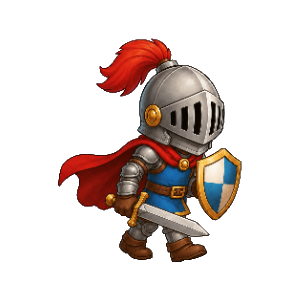

Brücke: 0 / 3

Tastsinn: Fühlbrücke
Merke dir die weiche Karte. Nach dem Verdecken werden die Karten gemischt. Wähle dann eine Karte aus, um die Brücke über die Grube zu bauen.
Runde 1: Kissen, Runde 2: Wolke, Runde 3: Teddy. Liegt am Ende ein spitzer Gegenstand in der Brücke, verliert Sir Nervus.